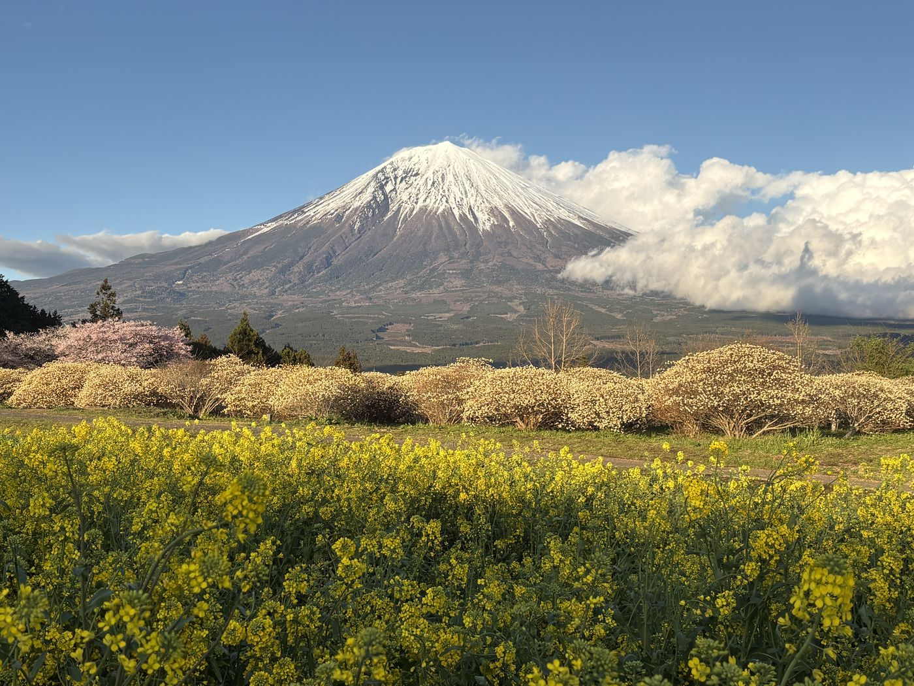
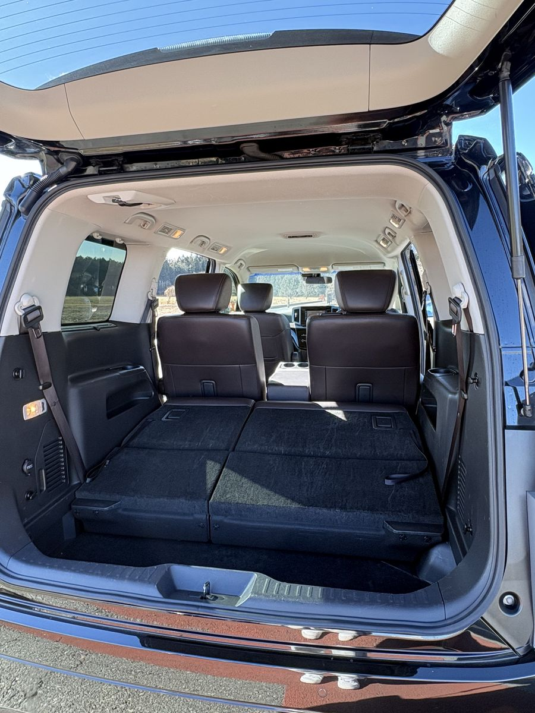
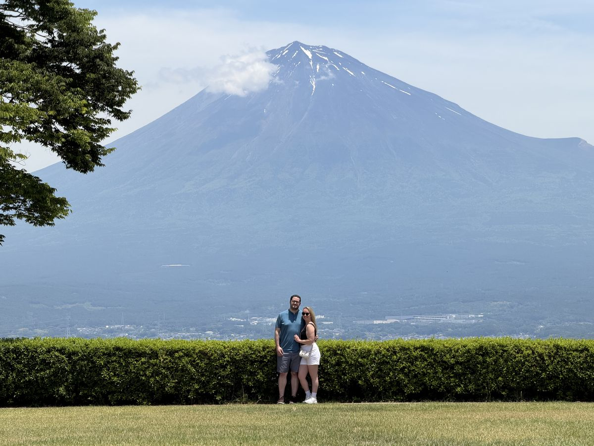

Why a stopover beats a day trip
Most travelers see Mt. Fuji on a full-day bus tour from Tokyo: two to three hours out, the same back, and a whole day of your itinerary gone. But the Tokaido Shinkansen — the train you're already taking between Tokyo and Kyoto — passes right by the mountain's southern foot.
Shin-Fuji Station sits about an hour from Tokyo and roughly two hours from Kyoto. Step off mid-journey, spend four hours at the mountain, and board a later train onward. You arrive in Kyoto (or Tokyo) the same evening, having traded a travel day for a Mt. Fuji day. That's the entire trick.

The trains: what to know before you book
- Only the Kodama (こだま) stops at Shin-Fuji — not the Nozomi or Hikari. The Kodama is the all-stations service: slower overall, usually less crowded, and covered by the JR Pass.
- Book through SmartEX (smart-ex.jp), JR's official Shinkansen booking site — it lists all stations including Shin-Fuji and has the best change and cancellation terms. Many third-party apps simply don't show Shin-Fuji because the Nozomi skips it.
- Window seats for Fuji views from the train: seat E heading from Tokyo, seat A heading from Kyoto or Osaka.
- If you're on a Nozomi, you can transfer to a Kodama at Shizuoka or Mishima — your guide can help you plan connections after booking.
What about luggage?
This is the question everyone asks, and it's the easiest one. On a private tour, the van stores large cases for up to three guests — your bags ride with you. Bigger groups use the coin lockers at Shin-Fuji Station (¥300–800, cash). Either way, you walk back onto your train with everything you arrived with.

Sample stopover timetables
These are example timings — after booking, you send us your train times and the day is planned around them.
| Route | Step off | Tour | Back on board | Arrive |
|---|---|---|---|---|
| Tokyo → Kyoto | Depart Tokyo 6:57, arrive Shin-Fuji 8:03 | 8:10–12:10 | 13:08 | Kyoto 15:15 — full evening ahead |
| Kyoto → Tokyo | Depart Kyoto 8:30, arrive Shin-Fuji 10:36 | 10:45–14:45 | 15:10 | Tokyo 16:18 — in time for dinner |
| Tokyo round trip | Depart Tokyo 6:57, arrive Shin-Fuji 8:03 | 8:10–12:10 | 13:10 | Tokyo 14:18 — afternoon free |
What can you actually do in four hours?

More than you'd think, because everything sits close to the station on the quiet southern side of the mountain:
- Hidden viewpoints — chosen the morning of your visit for the clearest angle on the mountain (here's how locals avoid the crowds)
- Fujisan Hongu Sengen Taisha — the principal shrine of Mt. Fuji worship, where climbs traditionally began
- Fujinomiya yakisoba — the region's B-1 Grand Prix–winning soul food, at a family-run shop (full story here)
- Green tea or matcha at an award-winning tea house built from a single 400-year-old tree
You can do this independently with taxis and patience — or as a private half-day tour where a local-born bilingual guide meets you at the ticket gate, drives the day, and has you back on the platform with buffer to spare. Either way, the stopover is worth it.